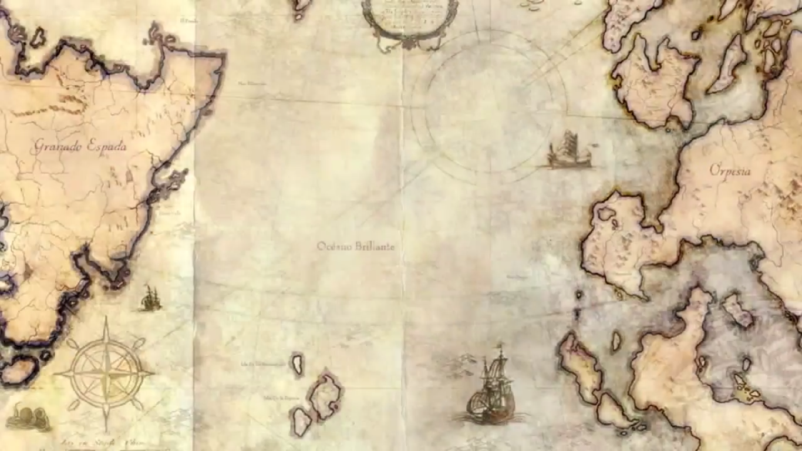
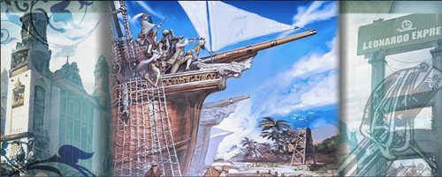

Background Story
Granado Espada Online is set in the New World, a newly discovered land away from the old hub of civilization. The back-drop is similar to the founding of America by Christopher Columbus during the Age of Discovery. See History of Granado Espada for a more detailed timeline of game events.
Discovery of the New World
Around 70 years ago, the nation of Opoluto was in economic recession due to its trade with the nation of Katai being cut off by Targa. In response, Ferruccio Espada and his assistant, Gilberto Granado, sought a new oceanic trade route across the Dark Sea to the West.
After 5 years, they finally reached an unknown land and named it Granado Espada. The new land is home to exotic species of plants and animals. Ancient ruins littered the continent. His home country, Opoluto, saw the potential of the land and began development of the New World, building the first port called Porto Bello, which was later replaced by Port of Coimbra.